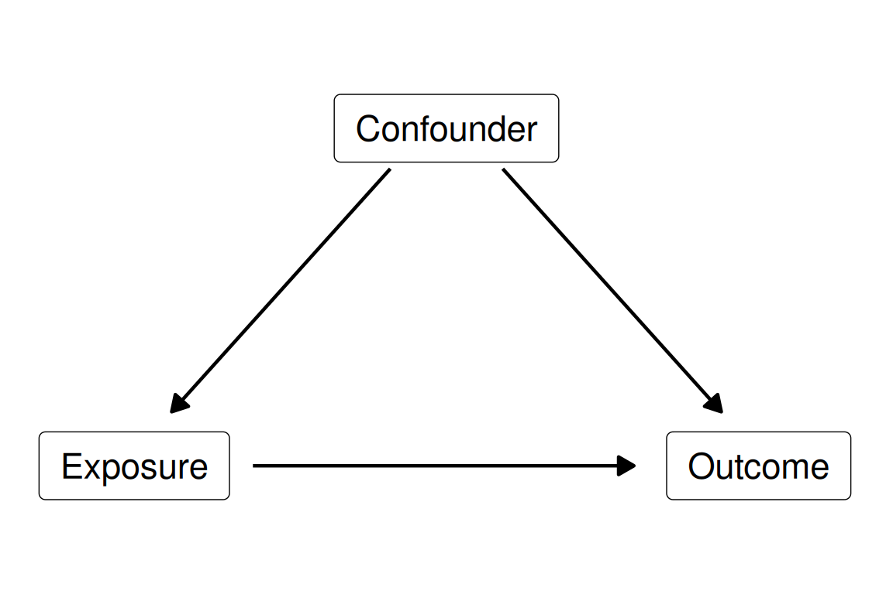
Multiple linear and logistic regression
Week 11
Fred Ho
What you have learnt so far
- Stats, Week 10. Cholesterol on sedentary time gave a slope of -0.0010 mmol/L per hour/day, with a 95% CI spanning zero
- We left age as a potential confounder
- Epi, Week 3. Regression adjustment is one of the main ways to mitigate confounding
- Epi, Week 4. Overadjustment bias, mediation, and reverse causation
- Epi, Week 5. Residual confounding, information bias, and Bradford Hill
By the end of this week, you will be able to
- Specify a multiple linear regression model to account for confounding and interpret the adjusted coefficients
- Include a categorical explanatory variable, interpret coefficients relative to the reference level, and recognise the equivalence with analysis of variance (ANOVA)
- Explain why a linear model is unsuitable for a binary response, and why the logistic regression model is a better alternative
- Interpret an exponentiated coefficient and its confidence interval from a logistic regression
Block 1: confounding and multiple linear regression
Was it age all along?
- Last week’s slope for cholesterol on sedentary time was small, and its 95% CI spanned zero
- We discussed whether that is convincing evidence of no association
- Older participants sit for longer
- Older participants also have higher cholesterol
- So comparing people who sit more against people who sit less is partly comparing older people against younger ones
- How can we account for this in regression models?
Confounding, revisited
- A confounder is a common cause of the exposure (the explanatory variable) and the outcome (the response)
- The arrows are a claim about the world
- They come from subject knowledge, not from the data (why?)
A model with several explanatory variables
- Y = α + β1X1 + β2X2 + … + βkXk + ε
- Y: the response, e.g., cholesterol in mmol/L
- X1: the exposure, e.g., sedentary time in hours/day
- X2 to Xk: the other explanatory variables, e.g., age, gender, and education
- α: the intercept, the mean response when every X is zero
- β1 to βk: one coefficient per explanatory variable
- ε: the error, what the model leaves unexplained
- The only change from Week 10 is that there is more than one X
- Every assumption from Week 10 carries over unchanged
What an ‘adjustment’ means
- β1 is the difference in mean response for one unit more of the exposure
- Among people who share the same values of every other variable in the model
- That is what ‘adjusted for age, gender, and education’ means
- Some may also describe this as ‘holding age, gender, and education constant’
What an ‘adjustment’ does not mean
- It does not mean the study held anything constant
- Nobody was matched, and nobody was restricted
- The model doesn’t actively keep variables unchanged
- It does not mean the estimate is now causal
- It does commit the model to an assumption:
- The model estimates one shared slope from everybody at once
- One extra hour of sitting carries the same association with cholesterol at every age, in both genders, and at each education level (i.e. no effect modification by these)
Sedentary behaviour and cholesterol, revisited
| Quantity | Estimate | 95% CI | p |
|---|---|---|---|
| Sedentary time, per hour/day, mmol/L | -0.00113 | -0.00224 to -0.00002 | 0.047 |
| Age, per year, mmol/L | 0.00475 | 0.00407 to 0.00543 | < 0.001 |
| Women against men, mmol/L | 0.161 | 0.137 to 0.184 | < 0.001 |
| 'High school graduate' against 'Less than high school', mmol/L | -0.013 | -0.048 to 0.022 | 0.462 |
| 'Above high school' against 'Less than high school', mmol/L | 0.005 | -0.025 to 0.034 | 0.763 |
- 31,228 participants with sedentary time, cholesterol, age, gender, and education recorded
- After adjustment for age, gender, and education, each additional hour/day of sedentary time was associated with 0.00113 mmol/L lower cholesterol (95% CI 0.00002 to 0.00224 mmol/L lower, p = 0.047)
- How should we interpret the rows for age, gender, and education?
Crude and adjusted, side by side
| Quantity | Estimate | 95% CI | p |
|---|---|---|---|
| Crude, per hour/day, mmol/L | -0.00074 | -0.00186 to 0.00038 | 0.195 |
| Adjusted for age, gender, and education, per hour/day, mmol/L | -0.00113 | -0.00224 to -0.00002 | 0.047 |
- The crude 95% CI includes zero, and the adjusted one doesn’t
- The estimate moved further from zero
- The CI did not narrow
- After adjustment for age, gender, and education, more sedentary time is associated with slightly lower cholesterol
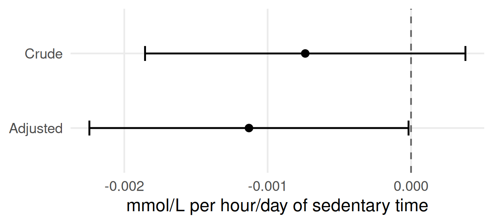
Both models, the same participants
- Requiring age, gender, and education to be recorded drops some participants because of missing data
- So the crude model is refitted on the participants the adjusted model could use
- Otherwise any movement between the two could be the adjustment, or the change of sample
- Nothing in the output would say which
- This is why the crude slope here is -0.00074 mmol/L per hour/day, not Week 10’s -0.0010
Reading the change
- Look at the estimate first
- The adjusted slope is about 1.5 times the size of the crude one
- Adjusting for age, gender, and education pulls the association further from zero
- The crude model was understating it, assuming we are sure the adjusted variables are true confounders
Try it: what did adjustment do here?
| Quantity | Estimate | 95% CI | p |
|---|---|---|---|
| Total physical activity, crude, per MET-hour/day, mmol/L | -0.00077 | -0.00161 to 0.00006 | 0.070 |
| Total physical activity, adjusted for age, gender, and education, per MET-hour/day, mmol/L | 0.00166 | 0.00079 to 0.00253 | < 0.001 |
- What has changed between the two rows?
- Describe the two results in two sentences
- Five minutes, in pairs
Try it: the answer
| Quantity | Estimate | 95% CI | p |
|---|---|---|---|
| Total physical activity, crude, per MET-hour/day, mmol/L | -0.00077 | -0.00161 to 0.00006 | 0.070 |
| Total physical activity, adjusted for age, gender, and education, per MET-hour/day, mmol/L | 0.00166 | 0.00079 to 0.00253 | < 0.001 |
- The estimate changed sign
- Crude: each additional MET-hour/day of total physical activity was associated with 0.00077 mmol/L lower cholesterol (95% CI 0.00161 lower to 0.00006 higher, p = 0.070)
- Adjusted for age, gender, and education: each additional MET-hour/day was associated with 0.00166 mmol/L higher cholesterol (95% CI 0.00079 to 0.00253, p < 0.001)
- The adjusted row is the better estimate of the association
- The crude row compares active people against inactive people who also differ in age and gender
- Adjustment still doesn’t guarantee a causal estimate
- It is closer to one than the crude estimate, since age, gender, and education are likely confounders
Table 2 fallacy
| Quantity | Estimate | 95% CI | p |
|---|---|---|---|
| Sedentary time, per hour/day, mmol/L | -0.00113 | -0.00224 to -0.00002 | 0.047 |
| Age, per year, mmol/L | 0.00475 | 0.00407 to 0.00543 | < 0.001 |
| Women against men, mmol/L | 0.161 | 0.137 to 0.184 | < 0.001 |
| 'High school graduate' against 'Less than high school', mmol/L | -0.013 | -0.048 to 0.022 | 0.462 |
| 'Above high school' against 'Less than high school', mmol/L | 0.005 | -0.025 to 0.034 | 0.763 |
- Suppose sitting lies on the pathway from age to cholesterol
- Part of age’s association then runs through sitting
- Age’s adjusted coefficient captures only the rest
- The overadjustment bias from Epi Week 4
- Reading every coefficient as if they’re causal is the Table 2 fallacy
- Westreich and Greenland (2013), American Journal of Epidemiology
- The confounders’ own coefficients are usually not presented: overadjustment, or their own confounders, can bias them
The difference between a confounder and a mediator
- A confounder is a common cause of the exposure and the outcome
- Adjusting for it removes bias
- A mediator lies on the path between them
- Adjusting for it removes part of the association we set out to estimate
- This is overadjustment bias, from Week 4
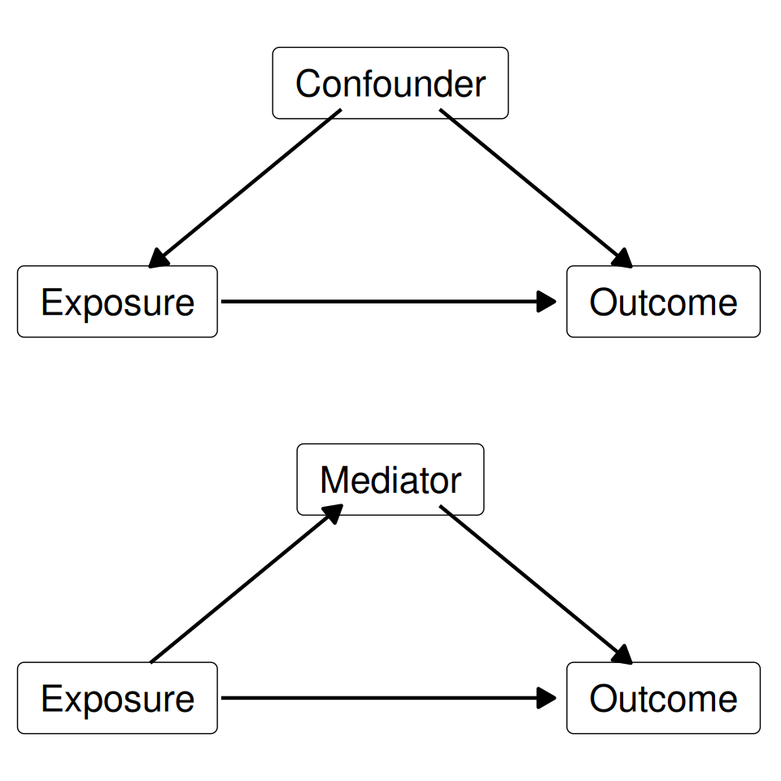
The data cannot tell them apart
- If a variable is associated with both exposure and outcome
- It can be a confounder
- But also a mediator, and a collider
- Confounder or mediator is a causal judgement, made before the analysis
- It rests on subject knowledge and on the study design
- No statistical test or software makes it for us
Try it: adjust, or leave it out?
| Exposure | Outcome | Third variable | |
|---|---|---|---|
| A | Sedentary time | Cholesterol | Age |
| B | Salt intake | Stroke | Blood pressure |
| C | Alcohol intake | Lung cancer | Smoking |
| D | Sedentary time | Death | Baseline cardiovascular disease |
- For each row:
- Is the third variable most plausibly a confounder or a mediator?
- What would adjusting for it do to the estimate?
- Three to five minutes, in pairs
Try it: the answer
| Exposure | Outcome | Third variable | Role | Adjusting for it | |
|---|---|---|---|---|---|
| A | Sedentary time | Cholesterol | Age | Confounder | Reduces confounding bias |
| B | Salt intake | Stroke | Blood pressure | Mediator | Introduces overadjustment bias |
| C | Alcohol intake | Lung cancer | Smoking | Confounder or prognostic factor | Reduces confounding bias or improves precision |
| D | Sedentary time | Death | Baseline cardiovascular disease | Cannot be settled from these data | Block 3 returns to it |
This week’s methodological anchor
- Which variables to adjust for depends on causal assumptions, not on patterns in the data
- Confounders should usually be adjusted for
- Mediators should not be, when the question is about the total association
- Colliders, common effects of the exposure and the outcome, should not be either
- Where the causal role is unclear, fit the model under each plausible role and report them all
- Ho (2025), BMJ Medicine: ‘Regression adjustment for causal inference’
- Judging whether a sentence says what the numbers support is where half the assessment marks are
Block 2: Regression and ANOVA
One categorical variable: one-way ANOVA
- Analysis of variance (ANOVA) asks whether the mean response is equal across three or more groups
- It answers with the F statistic:
- F = mean square between groups / mean square within groups
- Mean square between = sum of squares between groups / (k − 1), for k groups
- Mean square within = sum of squares within groups / (n − k), for n participants
- Intuitively, this is the ratio of between-group variation to within-group variation
- A large F statistic means the group means sit further apart than the spread inside the groups accounts for
- F = mean square between groups / mean square within groups
- A regression on one categorical explanatory variable with three or more levels asks the same question
- The F statistic from Week 10 is the same as the ANOVA F statistic
Between-group and within-group variation
- Between-group variation: how far the group means sit from each other
- Within-group variation: how far each participant sits from their own group’s mean
- Top: the means are far apart and each group is tight, so F is large
- Bottom: the means are close and each group is spread out, so F is small
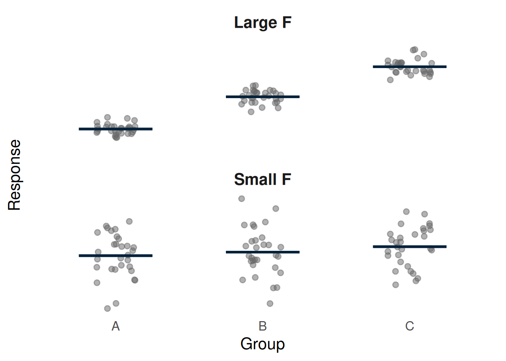
Does mean cholesterol differ by education?
| Education | Participants | Mean cholesterol, mmol/L |
|---|---|---|
| Less than high school | 9,576 | 5.005 |
| High school graduate | 8,777 | 4.989 |
| Above high school | 19,730 | 4.992 |
- H0: mean cholesterol is the same in all three education groups
- H1: at least one group’s mean differs
- F = 0.569 on 2 and 38,080 degrees of freedom, p = 0.566
- No evidence of a difference in mean cholesterol between the three groups
- The same model as Week 10, read as one question across all three groups
Try it: how far apart are the groups?
| Education | Mean cholesterol, mmol/L |
|---|---|
| Less than high school | 5.005 |
| High school graduate | 4.989 |
| Above high school | 4.992 |
- Which two groups differ most, and by how much, in mmol/L?
- Is that consistent with F = 0.569?
- Three minutes
Try it: the answer
| Education | Mean cholesterol, mmol/L |
|---|---|
| Less than high school | 5.005 |
| High school graduate | 4.989 |
| Above high school | 4.992 |
- ‘Less than high school’ and ‘High school graduate’ differ most: 0.016 mmol/L
- Tiny, set against how much cholesterol varies inside each group
- So the between-group mean square is small next to the within-group one, and F is small
Why not compare the groups in pairs?
- Sometimes we want to know whether a categorical variable matters, instead of which group has the higher or lower response
- Also, three groups give three pairwise comparisons, which makes at least one Type I error more likely
- Where pairwise comparisons are wanted afterwards, each CI has to be widened to keep the whole set at 95%
- Bonferroni is the simplest way of doing this
Diagnostics, several explanatory variables
- The four assumptions from Week 10 are unchanged
- Linearity, constant variance, normally distributed residuals, independence
- The same two plots check them
- The fitted value now combines several explanatory variables
- So the horizontal axis of the residual plot is no longer any one variable
Adjusted model: residuals against fitted
- The same picture as Week 10
- An even band around zero for most of the range
- No visible trend, and the spread looks constant
- A small group with unusually high cholesterol sits well above the band
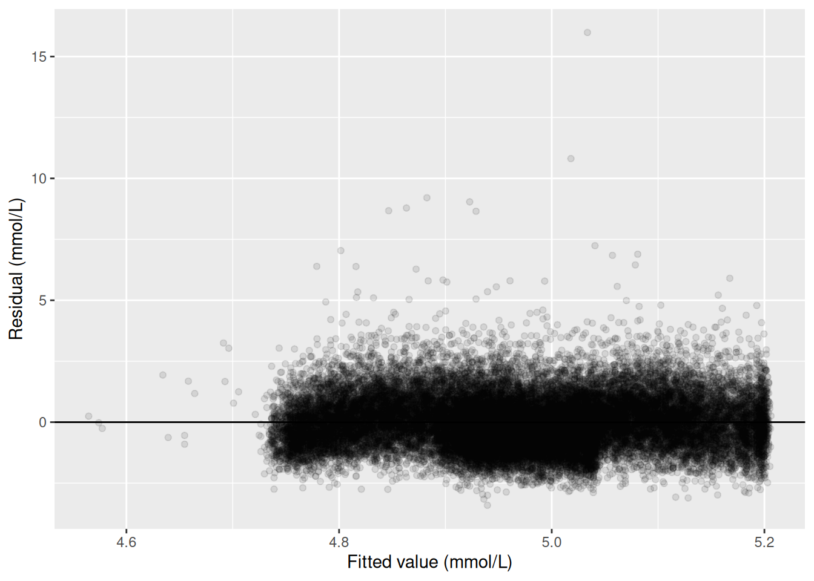
Adjusted model: the QQ plot
- The middle of the distribution sits close to the line
- The same high-cholesterol participants pull the upper tail away from it
- With 31,228 participants, the estimates hold up despite it
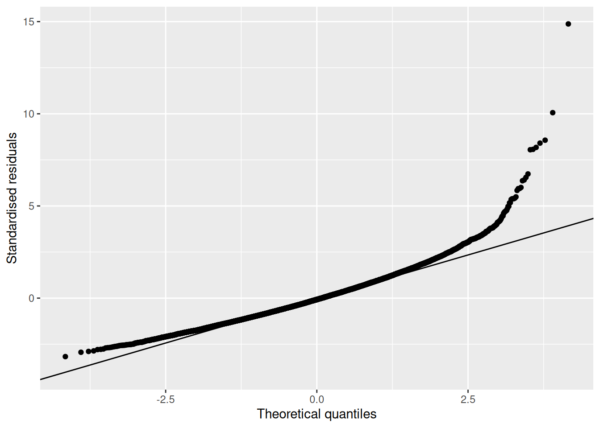
The response has always been a measurement
- Everything so far has changed the right-hand side of the model
- More explanatory variables, better questions
- The response has been cholesterol every time, a measurement in mmol/L
- Almost every outcome in the epidemiology half is not a measurement
- Died or survived, improved or not, diagnosed or not
Block 3: when the response is binary
Most epidemiology outcomes are binary
- Improvement in the streptomycin trial
- Incidence of a disease
- Death
- None of these is a measurement
- The linear regression models we used need a continuous response
- But what if we still fit a binary variable using linear regression?
The outcome: died within ten years
- The survey records whether each participant died during follow-up, and how long they were followed
- To create a binary variable, participants are categorised into three groups:
- Died within 120 months: an event, coded 1
- Known to be alive at 120 months, whether or not they died later: coded 0
- Alive, but followed for less than 120 months: cannot be classified either way, so excluded
What that costs, and what the models use
| Group | Participants |
|---|---|
| Died within ten years | 3,748 |
| Known alive at ten years | 14,275 |
| Excluded: follow-up ended too early | 23,742 |
- The models in this block run on a smaller set again: 10,696 participants, 3,028 events
- Every explanatory variable has to be recorded
- A fixed window ignores the timing of death
- Survival analysis keeps that, and the excluded participants: Advanced Statistics
- The number of events limits how many explanatory variables the model can carry
- So the adjustment set stays at three
A straight line through zeros and ones
- Ten-year mortality against age, with a straight line fitted
- At age 18, the youngest age in the sample, the line gives -0.147
- A value below zero is not a probability
- The line also describes the binary response variable poorly
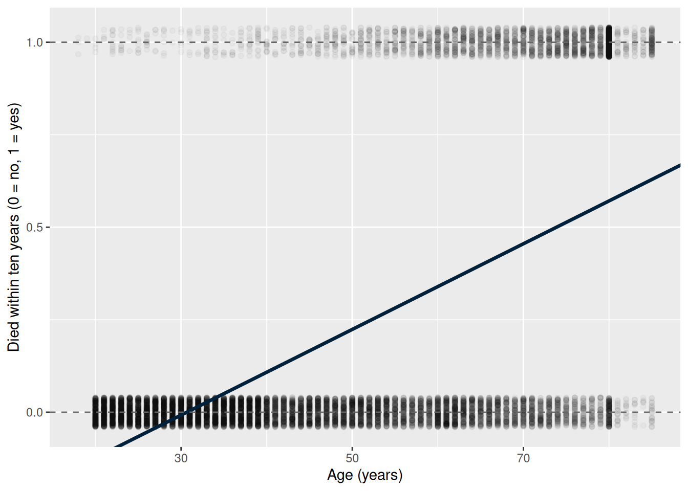
The fix: model the log odds
- From Week 2: odds = number with the outcome / number without it
- An odds ratio is one group’s odds divided by another’s
- A probability is bounded between zero and one, which is what broke the straight line
- The log of the odds runs from minus infinity to plus infinity
- That is the range a straight line needs
- So the model works on the log odds, with the same right-hand side as Block 1
The logistic regression model
\[P(Y = 1) = \frac{1}{1 + e^{-(\alpha + \beta_1 X_1 + \dots + \beta_k X_k)}}\]
- Y is the binary response, e.g., died within ten years
- X1 to Xk: the explanatory variables, as in Block 1
- α and β1 to βk: on the log-odds scale
- Whatever the exponent’s value, P(Y = 1) stays between 0 and 1
- Rearranged: log(odds) = α + β1X1 + … + βkXk
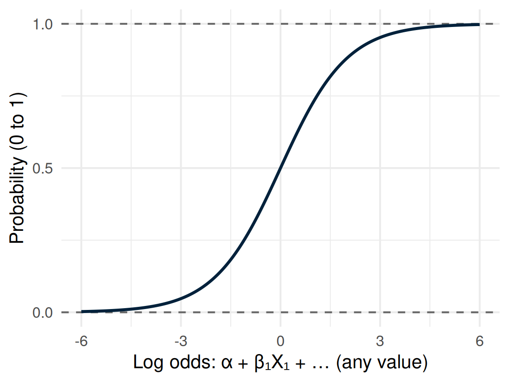
How to estimate the coefficients
- Linear regression used least squares, and its CIs and p-values rest on Week 10’s assumptions
- A binary response breaks them:
- At any fitted value, a residual can take only two values, so residuals cannot be normal
- The spread is p(1 − p), largest near 0.5, so it is not constant
- The fitted line can leave 0 to 1, as two slides back
- A larger sample does not fix any of these
- Maximum likelihood instead chooses the coefficients that make the observed 0s and 1s most probable
- Where linear regression’s assumptions hold, least squares and maximum likelihood give the same answer
What the software gives back
- The crude model of ten-year mortality on sedentary time returns a coefficient of 0.0396 per hour/day
- That number is on the log-odds scale
- Log-odds difference is usually not reported because it doesn’t have epidemiological meaning
- The reportable version needs one more step
Why exponentiating gives an odds ratio
- Compare X1 = x with X1 = x + 1, every other X unchanged
\[\begin{aligned} \log(\text{odds}_{x+1}) &= \alpha + \beta_1 (x + 1) + \beta_2 X_2 + \dots \\ \log(\text{odds}_{x}) &= \alpha + \beta_1 x + \beta_2 X_2 + \dots \\ \log(\text{odds}_{x+1}) - \log(\text{odds}_{x}) &= \beta_1 \end{aligned}\]
- Every other term is the same on both lines, so it cancels
- A difference of logs is the log of a ratio
\[\log\left(\frac{\text{odds}_{x+1}}{\text{odds}_{x}}\right) = \log(\text{OR}) = \beta_1 \quad\text{so}\quad \text{OR} = e^{\beta_1}\]
Exponentiate it: an odds ratio
- e0.0396 = 1.040
- The odds ratio from Epi Week 2
- The principle of adjustment also works for logistic regression
Sitting and ten-year mortality
| Quantity | Estimate | 95% CI | p |
|---|---|---|---|
| Crude odds ratio, per hour/day | 1.040 | 1.029 to 1.053 | < 0.001 |
| Odds ratio adjusted for age, gender, and education, per hour/day | 1.020 | 1.013 to 1.028 | < 0.001 |
- Crude: each additional hour/day of sedentary time was associated with 4.0% higher odds of dying within ten years (OR 1.040, 95% CI 1.029 to 1.053, p < 0.001)
- Both 95% CIs sit entirely above 1
- The adjusted estimate is the smaller
- Part of the crude association was age
- Older participants both sit more and are more likely to die within ten years
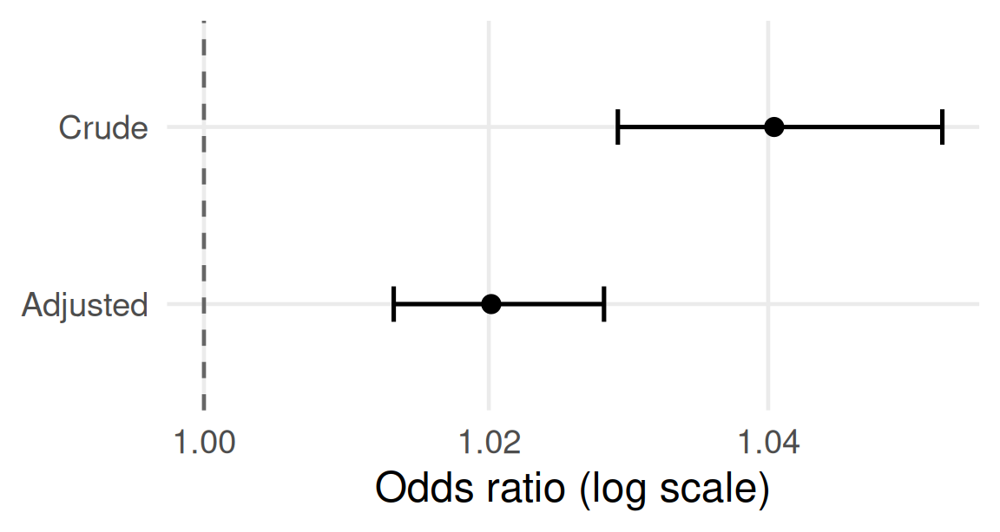
An odds ratio as a percentage change
- An odds ratio above 1: (OR − 1) × 100% higher odds
- e.g., 1.040 is 4.0% higher odds per hour/day
- An odds ratio below 1: (1 − OR) × 100% lower odds
- e.g., 0.80 is 20% lower odds
- Convert both CI limits the same way: 2.9% to 5.3% higher
- It is a change in the odds, not in the risk
The null value is 1, not 0
- No association on the odds ratio scale is an odds ratio of 1
- The same point Week 9 made for the risk ratio and the odds ratio from a 2x2 table
- A 95% CI that excludes 1 is the ratio-scale version of one that excludes zero
- Both 95% CIs on the previous slide exclude 1
Try it: coefficient to odds ratio
- The adjusted model’s coefficient for sedentary time is 0.01997 on the log-odds scale, per hour/day
- Turn it into an odds ratio for one extra hour a day, and describe it in one or two sentences, with the 95% CI and p from the mortality table
- Bonus question: Give the odds ratio for five extra hours a day
- Five minutes
Try it: the answer
- e0.01997 = 1.020, the adjusted odds ratio in the mortality table
- After adjustment for age, gender, and education, each additional hour/day of sedentary time was associated with 2.0% higher odds of dying within ten years (OR 1.020, 95% CI 1.013 to 1.028, p < 0.001)
- Bonus, five hours: 1.0205 ≈ 1.11, about 11% higher odds
- Not 1.020 × 5
- The model is additive on the log-odds scale
- Exponentiating turns adding into multiplying
- So odds ratios multiply across units
When adjustment moves the answer a lot
| Quantity | Estimate | 95% CI | p |
|---|---|---|---|
| Vigorous activity outside work, crude odds ratio, per hour/day | 0.065 | 0.044 to 0.094 | < 0.001 |
| Vigorous activity outside work, adjusted odds ratio, per hour/day | 0.376 | 0.264 to 0.520 | < 0.001 |
- Crude: each additional hour/day of vigorous activity outside work was associated with 94% lower odds of dying within ten years (OR 0.065, 95% CI 0.044 to 0.094, p < 0.001)
- Adjusted for age, gender, and education: 62% lower odds (OR 0.376, 95% CI 0.264 to 0.520, p < 0.001)
How far adjustment moved it
- Still a substantial association, but far smaller
- Most of the crude association was age
- Sedentary time, for comparison, moved far less on this scale
- The lab’s Exercise 2 repeats this on vigorous activity overall
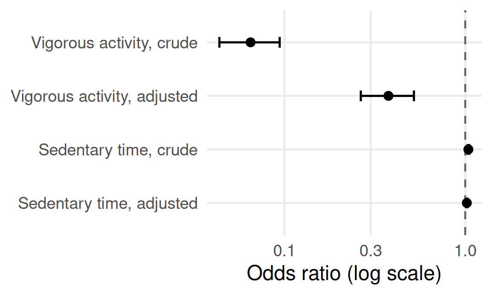
A harder case: baseline heart disease
- Existing heart disease could make someone both less active and more likely to die
- A confounder, worth adjusting for
- Or sitting could contribute to heart disease, which then contributes to death
- A mediator, and adjusting for it removes part of what we set out to estimate
- Both are biologically plausible
Why the data cannot decide
- Sedentary time and baseline cardiovascular disease were recorded at the same study visit
- Nothing in the data establishes which came first
- This is not a gap in the analysis, and more data would not close it
- It is a limitation of the lack of temporality in the measurements
What a sensitivity analysis is
- An analysis can rest on an assumption we are not certain of
- A sensitivity analysis fits the model under each competing assumption and reports them all
- It cannot say which assumption is right
- It is not a test with a verdict
- It says whether the conclusion depends on the assumption at all
Sensitivity analysis: the two models
| Quantity | Estimate | 95% CI | p |
|---|---|---|---|
| Without baseline cardiovascular disease (assumes a mediator), odds ratio per hour/day | 1.020 | 1.013 to 1.028 | < 0.001 |
| With baseline cardiovascular disease (assumes a confounder), odds ratio per hour/day | 1.019 | 1.012 to 1.026 | < 0.001 |
- Baseline cardiovascular disease is itself strongly associated with dying within ten years
- Odds ratio 2.360 (95% CI 2.065 to 2.700, p < 0.001)
- Without it: OR 1.020 per hour/day of sedentary time (95% CI 1.013 to 1.028, p < 0.001)
- With it: OR 1.019 (95% CI 1.012 to 1.026, p < 0.001)
- Adjusting for it changes almost nothing about the sedentary time estimate
- Whether baseline cardiovascular disease is a confounder or a mediator, the conclusion about sedentary time and death is the same
What adjustment can and cannot fix
- Regression adjustment is a powerful tool, and one of the most used statistical tools to mitigate confounding, but it cannot fix:
- Confounders that were measured badly (information bias, leading to residual confounding)
- Confounders that were never measured at all (unmeasured confounding)
- Participants missing from the analysis (selection bias)
- Adjusting for the wrong variable (overadjustment bias)
Application
Crude, adjusted, and no interpretation
- Overweight or obesity in Malaysian men, by physical activity level, with selected other rows
| Comparison | Crude OR (95% CI) | Adjusted OR (95% CI) |
|---|---|---|
| Physical activity: low against high | 1.28 (1.10 to 1.49) | 1.06 (0.91 to 1.24) |
| Physical activity: moderate against high | 1.34 (1.18 to 1.51) | 1.14 (1.01 to 1.30) |
| Age 40 to 49 against 18 to 29 | 1.98 (1.65 to 2.37) | 1.44 (1.14 to 1.81) |
| Age 60 or over against 18 to 29 | 1.32 (1.10 to 1.58) | 0.74 (0.56 to 0.98) |
| Tertiary education against none | 2.49 (1.81 to 3.44) | 1.67 (1.20 to 2.33) |
- Adjusted for age, ethnicity, area, marital status, education, income, sitting time, diabetes, hypertension, and high cholesterol
- In pairs, ten minutes:
- Interpret the adjusted odds ratio for moderate against high activity, in context, and state what it is adjusted for
- Pick any other coefficients: could the same sentence honestly be written about it?
- Chan et al. (2017), BMC Public Health, Table 3, men only
The sentences, and what the authors wrote
| Comparison | Crude OR (95% CI) | Adjusted OR (95% CI) |
|---|---|---|
| Physical activity: moderate against high | 1.34 (1.18 to 1.51) | 1.14 (1.01 to 1.30) |
- Men with moderate activity had 1.14 times the odds of overweight or obesity of men with high activity (95% CI 1.01 to 1.30), after adjustment for the variables listed
- The authors: ‘A low level of PA was associated with the risk of overweight/obesity (Adjusted OR = 1.14; 95% CI: 1.01–1.30) compared to a high level of PA among men’
- 1.14 is the moderate row, not the low row
- An odds ratio is not a risk
- Diabetes, hypertension, and high cholesterol may follow from overweight, not precede it
- Adjusting for them is a judgement the table does not justify
The other coefficients
- All coefficients are mutually adjusted
- But the adjustment set was chosen for physical activity, not for age or education
- So the same sentence cannot honestly be written about the other rows: the Table 2 fallacy
- The authors: ‘Among the socio-demographic variables, age, ethnicity and educational level were significantly associated with being overweight/obese’
- Chan et al. (2017), BMC Public Health, CC BY 4.0, Table 3, men only
A cautionary tale
- Year trend for student activity in Scottish further education
- A statistician was asked to predict the next point in this sequence
- They fitted a straight line, and predicted the red point: about 7,720
- The actual value was the green point: about 6,890
- The data had levelled off, and a straight line cannot
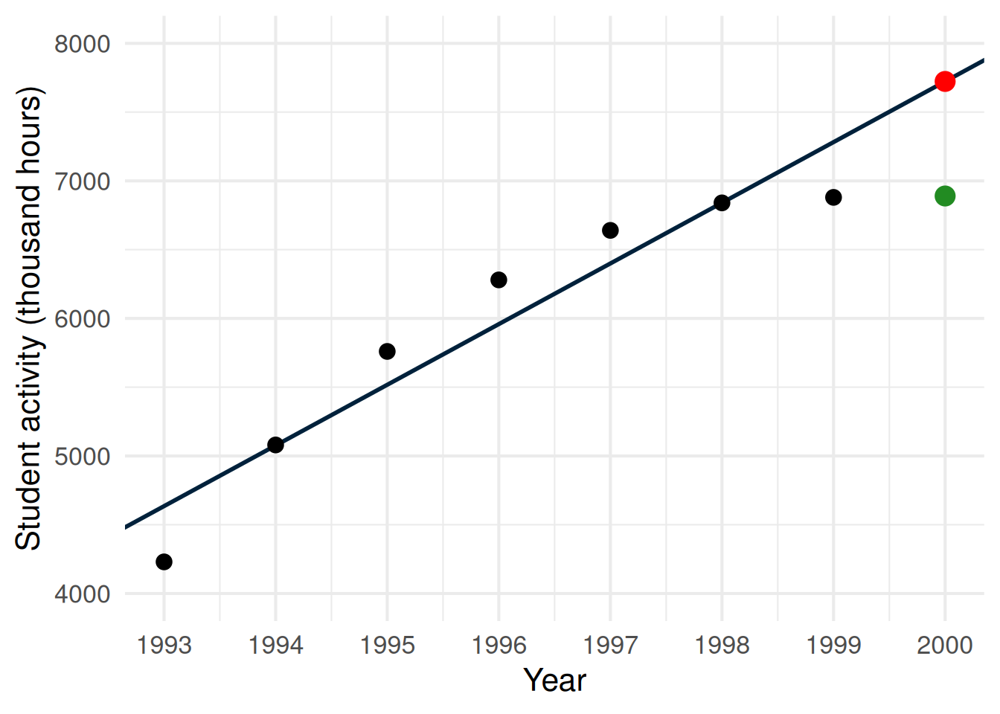
Always look at the data first
- Plot before modelling
- Week 7’s descriptive statistics
- Week 10’s scatterplot
- This week’s diagnostics
- A model always returns a number, whatever shape the data are
Where this goes next
- Not covered here:
- Model fit statistics: deviance and pseudo R squared
- Diagnostics specific to logistic regression
- Interaction, prediction, and discrimination
- Picked up by Advanced Statistics:
- Model building, and why stepwise selection is a poor way to do it
- Explanation against prediction, and multicollinearity
- Formal mediation analysis
- Survival analysis, for the follow-up time this session set aside
- Logistic regression in full
Key points, and what the lab does
- A crude association can mislead, and adjustment is how a regression addresses it
- An adjusted coefficient is an association among people alike in everything else the model holds
- Beware the Table 2 fallacy when interpreting the other variables’ coefficients
- Exponentiate a logistic regression coefficient to derive an odds ratio, with the null at 1
- Sensitivity analysis is a tool to help when you want to examine if an assumption is important
- The lab derives the ten-year mortality outcome, fits both model types, and builds the crude-and-adjusted and sensitivity tables